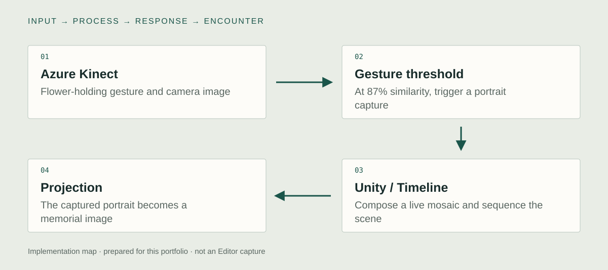

Unity implementation
Flower-holding gesture and Azure Kinect capture
I used Azure Kinect to recognize the visitor holding a flower. When the hand pose reaches at least 87% similarity to the target gesture, the system automatically captures a camera image. The threshold is the gesture trigger, not a measured recognition-accuracy result.

Unity Timeline
I connected the gesture-triggered capture to the Unity Timeline presentation. The visitor determines when the capture event occurs; Timeline coordinates the subsequent memorial sequence and screen transitions.
Live portrait mosaic
After capture, the visitor’s portrait is transformed into a live mosaic using the project’s photo imagery. The portrait remains visible beneath the evolving mosaic in the projected memorial image.

System & design decisions

- 01Azure Kinect
Flower-holding gesture and camera image
- 02Gesture threshold
At 87% similarity, trigger a portrait capture
- 03Unity / Timeline
Compose a live mosaic and sequence the scene
- 04Projection
The captured portrait becomes a memorial image
A sensor event inside a timed sequence
Timeline organizes authored media over time, while the sensor introduces events that arrive according to a participant's actions. Integrating those two modes is the central implementation problem.
Live presence and archival material
The participant's body supplies a changing visual structure for historical imagery. Tracking, composition, and sequence state must remain understandable as separate stages.
Verification and reuse notes
These are newly prepared checks, not reported production incidents.
- Design decision
- Keep live sensor input distinct from authored Timeline time. The integration connects participant activity to a media sequence while preserving control over the composition.
- Failure case to exercise
- Leave the tracking area during a sequence and return. Inspect how the original project handles interrupted participation and prepares for the next visitor. Recovery behavior still needs a capture.
- Observable evidence
- Capture the Azure Kinect view, input-to-event boundary, and Timeline playhead in one continuous recording. Show the transition into the memorial image and the actual reset path.
- Reuse boundary
- This case demonstrates sensor-to-sequence integration. The recognition rule, sensor setup, and reset behavior must be documented before reuse. A reusable adapter and formal event logger would be additional work.
Concept
How can a person enter an archive through a gesture rather than only look at it?
The work commemorates the Gwangju Democratization Movement. Its central relation is between a person present now and photographs of people and events in the past. The archive is carried by the visitor's silhouette, making participation an act of attention and remembrance.
Development
Retrospective planning notes, prepared for this portfolio.
Define the commemorative act
Use the relation between a body, a gesture, and archival imagery as the brief for the interaction.
Map participation to sequence
Decide which parts of the presentation are authored in time and which begin in response to live input.
Rehearse the transitions
Inspect arrival, recognition, image transformation, and return to a state ready for another participant.
Further research
How does gesture-triggered sequencing change the experience of participating in a digital memorial?
Vary: Gesture-triggered versus fixed-time presentation.
Hold consistent: Archival material, visual composition, and presentation duration.
Proposed comparison. No controlled study or measured effect is reported.